Visual and analytic solution comparison
from bayesian_quadrature import BQ, bq_c
gamma = 1
ntry = 10
n_candidate = 10
R_mean = 3.141592653589793
R_var = 10.0
ns = 30
x = np.linspace(-8, 8, ns)
y = scipy.stats.norm.pdf(x, 0, 1)
bq = BQ(x, y, gamma, ntry, n_candidate, R_mean, R_var, s=0)
bq._fit_S()
bq.gp_S.params = (0.4, 1.1, 0)
bq._fit_log_S()
bq._fit_Dc()
N = np.logspace(np.log10(30), np.log10(300), 100)
INFO:gp.gp:Best parameters: [ 0.21290098 1.39766047 0. ]
WARNING:gp.gp:MLII failed, p=[ 1.39752594]
WARNING:gp.gp:MLII failed, p=[ 1.39750486]
INFO:gp.gp:Best parameters: [ 0.21290098 1.39744721 0. ]
INFO:gp.gp:Best parameters: [ 0.33647224 1.1 0. ]
WARNING:gp.gp:MLII failed, p=[ 0.51262829 2.0402506 ]
WARNING:gp.gp:MLII failed, p=[ 0.63578265 1.77046338]
INFO:gp.gp:Best parameters: [ 0.04983182 1.44406405 0. ]
xo = np.linspace(-10, 10, N[-1])
yo = scipy.stats.norm.pdf(xo, 0, 1)
plt.plot(xo, yo, 'k-')
plt.plot(xo, bq.S_mean(xo), 'r-')
plt.plot(bq.R, bq.S, 'ro')
[<matplotlib.lines.Line2D at 0x114ba1a50>]
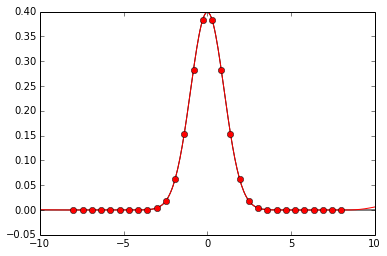
calc = np.empty(bq.R.shape[0])
bq_c.int_K(
calc, bq.R[:, None],
bq.gp_S.K.h, np.array([bq.gp_S.K.w]),
bq.R_mean, bq.R_cov)
approx = np.empty((N.size, bq.R.shape[0]))
for i, n in enumerate(N):
xo = np.linspace(-10, 10, n)
Kxxo = bq.gp_S.Kxxo(xo)
p_xo = scipy.stats.norm.pdf(xo, bq.R_mean[0], np.sqrt(bq.R_cov[0, 0]))
approx[i] = np.trapz(Kxxo * p_xo, xo)
plt.plot(N, np.abs(calc-approx).sum(axis=-1), lw=2, color='r')
[<matplotlib.lines.Line2D at 0x114beb1d0>]
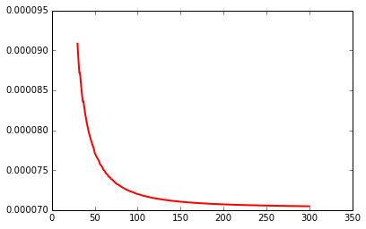
print np.abs(calc - approx[-1]).max()
print approx[-1].sum(), calc.sum()
5.03676860171e-05
0.271750514382 0.271820990483
plt.plot(approx[-1], lw=2)
plt.plot(calc, '--', lw=2)
[<matplotlib.lines.Line2D at 0x114bf4990>]
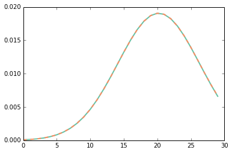
calc = bq_c.int_int_K(
1, bq.gp_S.K.h, np.array([bq.gp_S.K.w]),
bq.R_mean, bq.R_cov)
approx = np.empty(N.size)
for i, n in enumerate(N):
xo = np.linspace(-10, 10, n)
Kxoxo = bq.gp_S.Kxoxo(xo)
p_xo = scipy.stats.norm.pdf(xo, bq.R_mean[0], np.sqrt(bq.R_cov[0, 0]))
approx[i] = np.trapz(np.trapz(Kxoxo * p_xo, xo) * p_xo, xo)
plt.plot(N, np.abs(calc-approx), lw=2, color='r')
[<matplotlib.lines.Line2D at 0x110992cd0>]
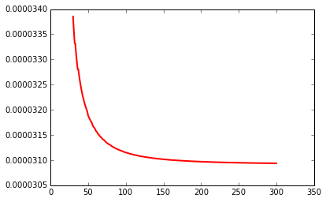
print np.abs(calc - approx[-1]).max()
print approx[-1], calc
3.09359633587e-05
0.0138289518262 0.0138598877896
calc = np.empty(ns)
bq_c.int_int_K1_K2(
calc, bq.gp_log_S.x[:, None],
bq.gp_S.K.h, np.array([bq.gp_S.K.w]),
bq.gp_log_S.K.h, np.array([bq.gp_log_S.K.w]),
bq.R_mean, bq.R_cov)
approx = np.empty((N.size, ns))
for i, n in enumerate(N):
xo = np.linspace(-10, 10, n)
K1xoxo = bq.gp_S.Kxoxo(xo)
K2xxo = bq.gp_log_S.Kxxo(xo)
p_xo = scipy.stats.norm.pdf(xo, bq.R_mean[0], np.sqrt(bq.R_cov[0, 0]))
int1 = np.trapz(K1xoxo * K2xxo[:, :, None] * p_xo, xo)
approx[i] = np.trapz(int1 * p_xo, xo)
plt.plot(N, np.abs(calc - approx).sum(axis=-1), lw=2, color='r')
[<matplotlib.lines.Line2D at 0x1109ca190>]
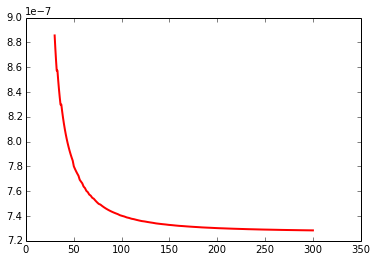
print np.abs(calc - approx[-1]).max()
print approx[-1].sum(), calc.sum()
3.38945699993e-07
0.00278139204287 0.00278212044179
plt.plot(approx[-1], lw=2)
plt.plot(calc, '--', lw=2)
[<matplotlib.lines.Line2D at 0x114c959d0>]
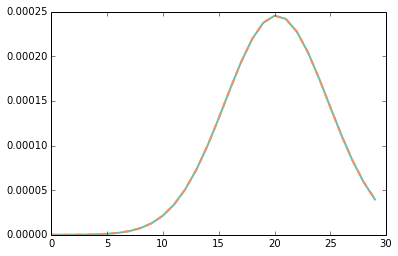
calc = np.empty((ns, ns))
bq_c.int_int_K1_K2_K1(
calc, bq.gp_S.x[:, None],
bq.gp_S.K.h, np.array([bq.gp_S.K.w]),
bq.gp_log_S.K.h, np.array([bq.gp_log_S.K.w]),
bq.R_mean, bq.R_cov)
approx = np.empty((N.size, ns, ns))
for i, n in enumerate(N):
xo = np.linspace(-10, 10, n)
K1xxo = bq.gp_S.Kxxo(xo)
K2xoxo = bq.gp_log_S.Kxoxo(xo)
p_xo = scipy.stats.norm.pdf(xo, bq.R_mean[0], np.sqrt(bq.R_cov[0, 0]))
int1 = np.trapz(K1xxo[:, None, :] * K2xoxo * p_xo, xo)
approx[i] = np.trapz(K1xxo[:, None] * int1[None] * p_xo, xo)
plt.plot(N, np.abs(calc - approx).sum(axis=-1).sum(axis=-1), lw=2, color='r')
[<matplotlib.lines.Line2D at 0x110d26410>]

print np.abs(calc - approx[-1]).max()
print approx[-1].sum(), calc.sum()
3.40947657927e-09
0.000795095584752 0.000795107133503
fig, (ax1, ax2) = plt.subplots(1, 2)
vmax = max(approx[-1].max(), calc.max())
ax1.imshow(approx[-1], cmap='gray', interpolation='nearest', vmin=0, vmax=vmax)
ax2.imshow(calc, cmap='gray', interpolation='nearest', vmin=0, vmax=vmax)
<matplotlib.image.AxesImage at 0x110d2eb50>

plt.plot(approx[-1, 20], lw=2)
plt.plot(calc[20], '--', lw=2)
[<matplotlib.lines.Line2D at 0x110d36450>]
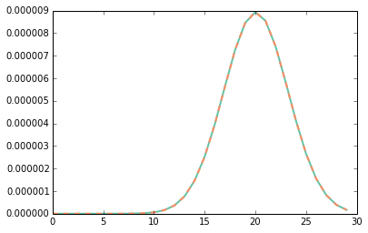
calc = np.empty((ns, ns))
bq_c.int_K1_K2(
calc, bq.gp_S.x[:, None], bq.gp_log_S.x[:, None],
bq.gp_S.K.h, np.array([bq.gp_S.K.w]),
bq.gp_log_S.K.h, np.array([bq.gp_log_S.K.w]),
bq.R_mean, bq.R_cov)
approx = np.empty((N.size, ns, ns))
for i, n in enumerate(N):
xo = np.linspace(-10, 10, n)
K1xxo = bq.gp_S.Kxxo(xo)
K2xxo = bq.gp_log_S.Kxxo(xo)
p_xo = scipy.stats.norm.pdf(xo, bq.R_mean[0], np.sqrt(bq.R_cov[0, 0]))
approx[i] = np.trapz(K1xxo[:, None] * K2xxo[None, :] * p_xo, xo)
plt.plot(N, np.abs(calc - approx).sum(axis=-1).sum(axis=-1), lw=2, color='r')
[<matplotlib.lines.Line2D at 0x1152d5110>]

print np.abs(calc - approx[-1]).max()
print approx[-1].sum(), calc.sum()
2.41928911525e-07
0.0544404447838 0.054440936734
fig, (ax1, ax2) = plt.subplots(1, 2)
vmax = max(approx[-1].max(), calc.max())
ax1.imshow(approx[-1], cmap='gray', interpolation='nearest', vmin=0, vmax=vmax)
ax2.imshow(calc, cmap='gray', interpolation='nearest', vmin=0, vmax=vmax)
<matplotlib.image.AxesImage at 0x1152da190>
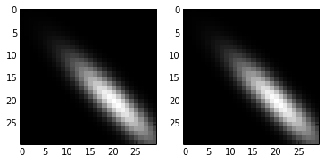
plt.plot(approx[-1, 20], lw=2)
plt.plot(calc[20], '--', lw=2)
[<matplotlib.lines.Line2D at 0x114bffd10>]

calc = np.empty((bq.R.shape[0], bq.R.shape[0], 1))
bq_c.int_K1_dK2(
calc, bq.gp_S.x[:, None], bq.gp_log_S.x[:, None],
bq.gp_S.K.h, np.array([bq.gp_S.K.w]),
bq.gp_log_S.K.h, np.array([bq.gp_log_S.K.w]),
bq.R_mean, bq.R_cov)
approx = np.empty((N.size, ns, ns, 1))
for i, n in enumerate(N):
xo = np.linspace(-10, 10, n)
K1xxo = bq.gp_S.Kxxo(xo)
dK2xxo = bq.gp_log_S.K.dK_dw(bq.gp_log_S._x, xo)
p_xo = scipy.stats.norm.pdf(xo, bq.R_mean[0], np.sqrt(bq.R_cov[0, 0]))
approx[i] = np.trapz(
K1xxo[None, :] * dK2xxo[:, None] * p_xo, xo)[..., None]
plt.plot(N, np.abs(calc - approx).sum(axis=-1).sum(axis=-1).sum(axis=-1), lw=2, color='r')
[<matplotlib.lines.Line2D at 0x1158049d0>]
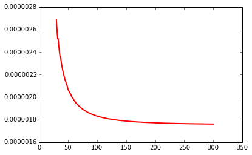
print np.abs(calc - approx[-1]).max()
print approx[-1].sum(), calc.sum()
6.75258361471e-07
-0.00126792912129 -0.00126616818405
fig, (ax1, ax2) = plt.subplots(1, 2)
vmax = max(approx[-1, :, :, 0].max(), calc[:, :, 0].max())
ax1.imshow(approx[-1, :, :, 0], cmap='gray', interpolation='nearest', vmin=0, vmax=vmax)
ax2.imshow(calc[:, :, 0], cmap='gray', interpolation='nearest', vmin=0, vmax=vmax)
<matplotlib.image.AxesImage at 0x11580c450>
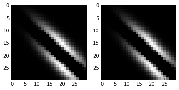
plt.plot(approx[-1, 20, :, 0], lw=2)
plt.plot(calc[20, :, 0], '--', lw=2)
[<matplotlib.lines.Line2D at 0x115c94690>]
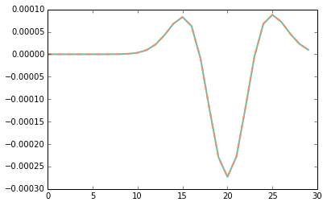
calc = np.empty((bq.R.shape[0], 1))
bq_c.int_dK(
calc, bq.R[:, None],
bq.gp_S.K.h, np.array([bq.gp_S.K.w]),
bq.R_mean, bq.R_cov)
approx = np.empty((N.size, ns, 1))
for i, n in enumerate(N):
xo = np.linspace(-10, 10, n)
dKxxo = bq.gp_S.K.dK_dw(bq.gp_S._x, xo)
p_xo = scipy.stats.norm.pdf(xo, bq.R_mean[0], np.sqrt(bq.R_cov[0, 0]))
approx[i] = np.trapz(dKxxo * p_xo, xo)[..., None]
plt.plot(N, np.abs(calc - approx).sum(axis=-1).sum(axis=-1), lw=2, color='r')
[<matplotlib.lines.Line2D at 0x115d89e10>]
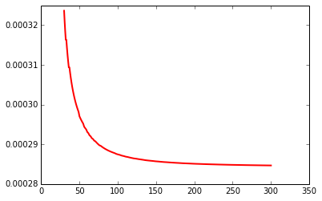
print np.abs(calc - approx[-1]).max()
print approx[-1].sum(), calc.sum()
0.000165229785319
-0.00577507767902 -0.0054904029985
plt.plot(approx[-1, :, 0] , lw=2)
plt.plot(calc[:, 0], '--', lw=2)
[<matplotlib.lines.Line2D at 0x115df8ad0>]

calc = bq.Z_mean()
approx = np.empty(N.size)
for i, n in enumerate(N):
xo = np.linspace(-10, 10, n)
p_xo = scipy.stats.norm.pdf(xo, bq.R_mean[0], np.sqrt(bq.R_cov[0, 0]))
S = bq.S_mean(xo)
approx[i] = np.trapz(S * p_xo, xo)
print np.abs(calc - approx[-1]).max()
print approx[-1], calc
0.00011803021887
0.0768588388447 0.0769768690636
plt.plot(N, np.abs(calc - approx), lw=2, color='r')
[<matplotlib.lines.Line2D at 0x11692d5d0>]
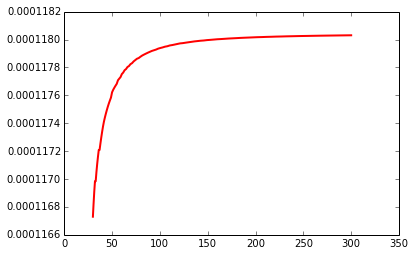
calc, calc_eps = bq._Z_var_and_eps()
approx = np.empty(N.size)
approx_eps = np.empty(N.size)
for i, n in enumerate(N):
xo = np.linspace(-10, 10, n)
p_xo = scipy.stats.norm.pdf(xo, bq.R_mean[0], np.sqrt(bq.R_cov[0, 0]))
m_l = bq.gp_S.mean(xo) + gamma
C_tl = bq.gp_log_S.cov(xo)
approx[i] = np.trapz(np.trapz(C_tl * m_l * p_xo, xo) * m_l * p_xo, xo)
dm_dw = bq.dm_dw(xo)
nu = np.trapz(m_l * dm_dw * p_xo, xo)
Cw = bq.Cw(bq.gp_log_S)
approx_eps[i] = nu ** 2 * Cw
print np.abs(calc - approx[-1]).max()
print approx[-1], calc
1.28680433153e-05
5.51724961435e-06 1.83852929296e-05
print np.abs(calc_eps - approx_eps[-1]).max()
print approx_eps[-1], calc_eps
9.07693765746e-49
-1.07882088874e-48 -1.98651465449e-48
plt.plot(N, np.abs(calc - approx), lw=2, color='r')
[<matplotlib.lines.Line2D at 0x1169cde90>]
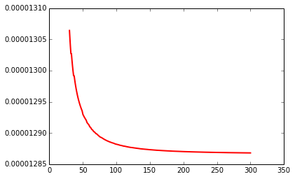
plt.plot(N, np.abs(calc_eps - approx_eps), lw=2, color='r')
[<matplotlib.lines.Line2D at 0x1169fcfd0>]
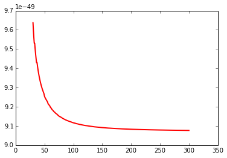